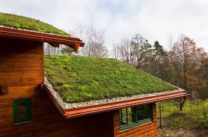

Educação Ambiental
Cuidar do planeta é responsabilidade de todos!
Cuidar do planeta é responsabilidade de todos!

Você já imaginou caminhar por uma cidade onde as paredes dos prédios respiram e os telhados são cobertos por jardins vibrantes? A arquitetura verde, ou design biofílico, é a resposta inteligente para o crescimento urbano desenfreado. Ela propõe uma integração profunda entre as nossas construções e a natureza, utilizando plantas, ventilação natural e materiais sustentáveis para criar espaços que respeitam o meio ambiente.
Os benefícios dessa "revolução verde" nas cidades são imediatos. Jardins verticais e telhados verdes funcionam como isolantes térmicos naturais, reduzindo drasticamente a necessidade de ar-condicionado e combatendo as ilhas de calor urbanas. Além disso, essas estruturas ajudam na purificação do ar e criam pequenos ecossistemas que servem de abrigo para a fauna local, trazendo a biodiversidade de volta para o nosso convívio diário.
Viver ou trabalhar em um edifício que abraça o verde vai além da estética; é uma questão de bem-estar. Estudos mostram que o contato visual com a natureza reduz o estresse, aumenta a produtividade e melhora a qualidade de vida. Ao investirmos em arquitetura verde, não estamos apenas construindo prédios mais bonitos, estamos projetando um futuro onde as cidades são extensões da floresta, promovendo saúde para as pessoas e para o planeta.